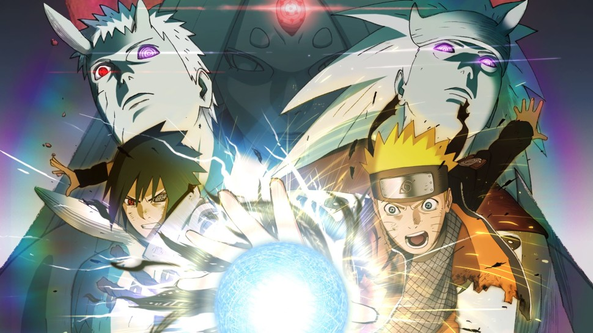
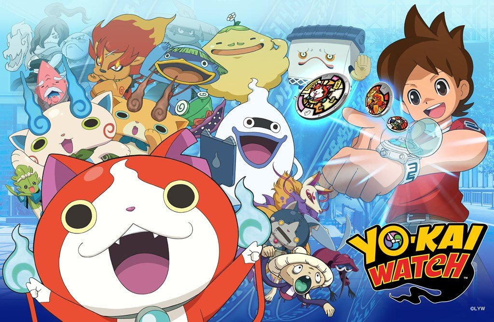
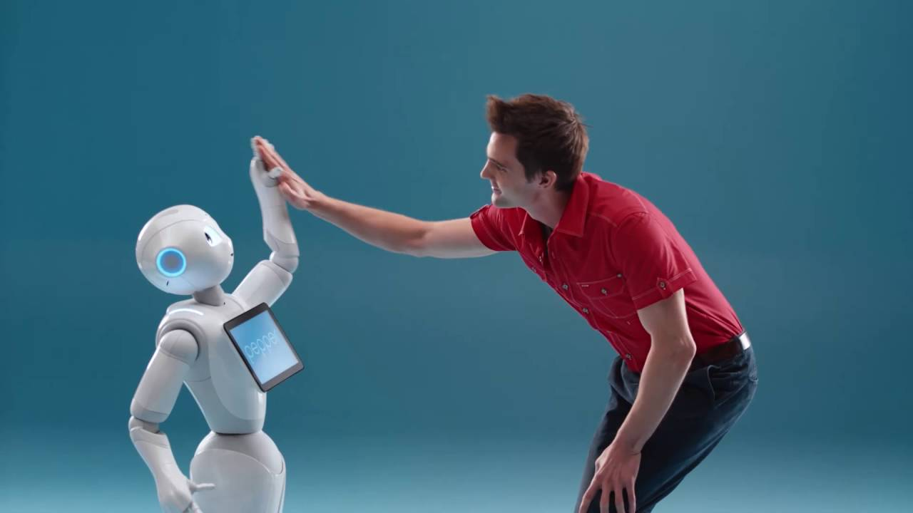

Apptech 代表 / ITコンサルタント Apptech / IT Consultant
過去のプロジェクト Experience
- 2016.02
NARUTO -ナルト- 疾風伝 ナルティメットストーム4 Naruto Shippuden Ultimate Ninja Storm 4

http://naruto-game.bngames.net
サウンドディレクションと効果音を担当。PS4やXbox、Steamなどで同シリーズを十数本開発。
I am in charge of sound direction and sound effect. Developed more than 10 series of PS4, Xbox, Steam and others.
スタジオカラー映像作品 Project of khara, Inc.

https://www.youtube.com/embed/IlRU_J5qYg0?rel=0
サウンドディレクションと効果音を担当。アフレコは声優オーディションから行いました。
I am in charge of sound direction and sound effect. We performed dubbing from a voice acting audition.
2016.04 - 2016.06
妖怪ウォッチ for スマートフォン Yo-Kai Watch for Smartphone

http://www.youkai-watch.jp/yw-sp/
サウンド部分のローカライズ、及びプラットフォームの移植を担当。
I'm in charge of localizing the sound part and porting the platform.
2017.07 - 2018.06
ロボットアプリケーション開発 Robot Application Development

(none)
Pepper、Sotaなど。コーディングとUIUXデザイン、プロダクトマネージャー及びディレクションを担当。
Pepper, Sota and more. I'm in charge of coding and UIUX design, product manager and direction.
Live2Dキャラクターを使用したwebAppプロダクト WebApp product using virtual character
(none)
UIUXデザイン、プロダクトマネージャー及びディレクション。バーチャルキャラクターの表現としてLive2Dを使用。
UIUX design, product manager and direction. Using Live2D as a representation of a virtual character.
業務経験のあるツール Tools
【Sound】Steinberg Cubase Pro / Sony Sound Forge / Sony Vegas / Avid Pro Tools / Adobe Audition【Visual】Adobe Photoshop / Adobe Lightroom / Adobe Premiere 【Robot】Choregraphe / VstoneMasic 【Other】Microsoft Office(+VBA) / Unity / Epic Games Unreal Engine 3 / CRI Atom Craft